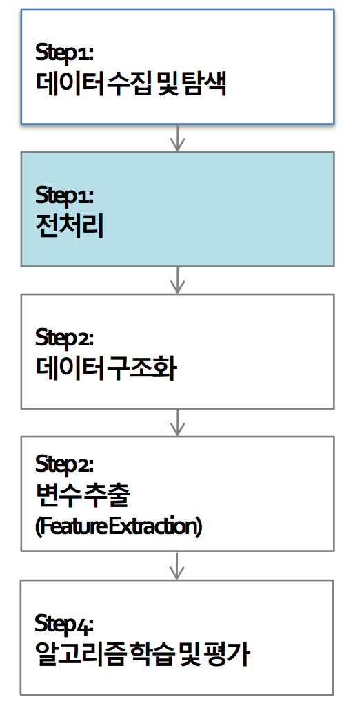
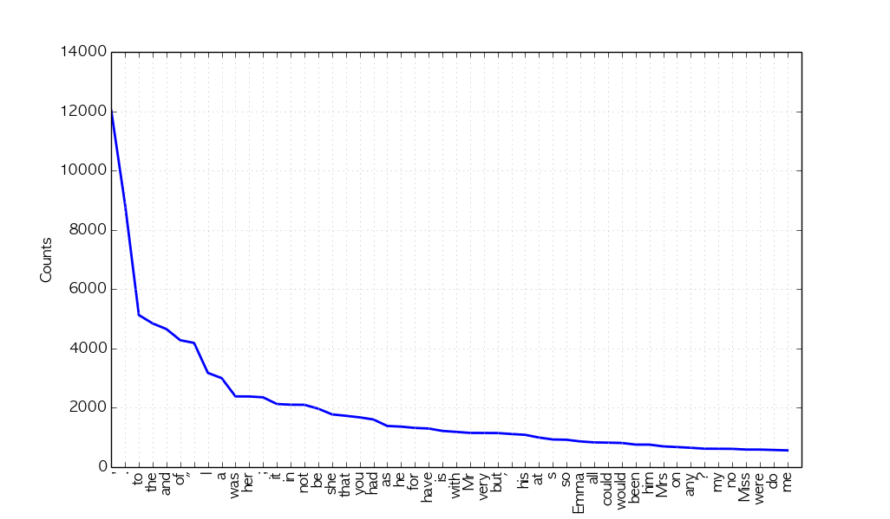
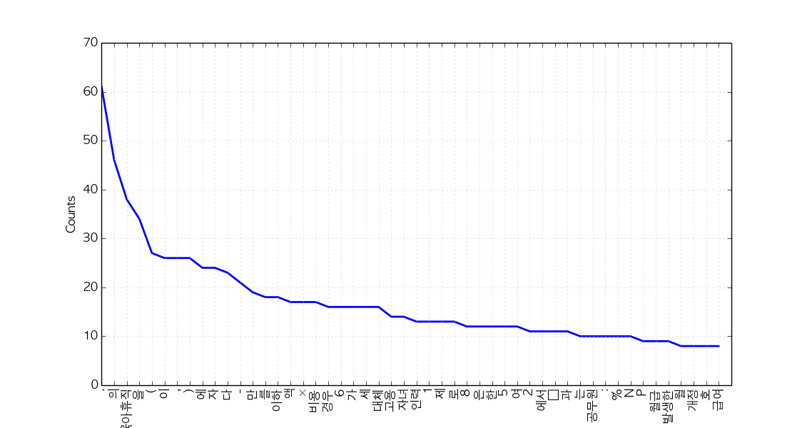
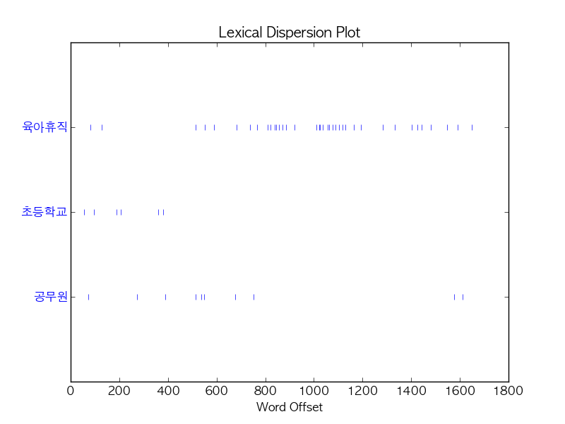
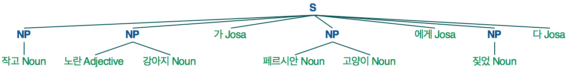

We use Python 3 in this tutorial, but provide minimal guidelines for Python 2.
지난 시간 복습
Terminologies
| English | 한국어 | Description |
|---|---|---|
| Document | 문서 | - |
| Corpus | 말뭉치 | A set of documents |
| Token | 토큰 | Meaningful elements in a text such as words or phrases or symbols |
| Morphemes | 형태소 | Smallest meaningful unit in a language |
| POS | 품사 | Part-of-speech (ex: Nouns) |
Text analysis process

전처리는 아래의 세부 과정으로 다시 한 번 나뉜다.
- Load text
- Tokenize text (ex: stemming, morph analyzing)
- Tag tokens (ex: POS, NER)
- Token(Feature) selection and/or filter/rank tokens (ex: stopword removal, TF-IDF)
- ...and so on (ex: calculate word/document similarities, cluster documents)
Useful Python Packages for Text Mining and NLP
-
NLTK: Provides modules for text analysis (mostly language independent)
-
설치하기
pip install nltk
-
주요기능
-
Text corpora: 특히, 이 튜토리얼에서는 아래의 두 가지 데이터가 필요하니 미리 다운 받아두자.
nltk.download('gutenberg') nltk.download('maxent_treebank_pos_tagger')
- Document classification
-
-
-
KoNLPy: Provides modules for Korean text analysis
-
설치하기
pip install konlpy
-
주요기능
- Text corpora
- Word POS classification
- Hannanum
- Kkma
- Mecab
- Komoran
-
-
Gensim: Provides modules for topic modeling and calculating similarities among documents
-
설치하기
pip install -U gensim
-
주요기능
- Topic modeling
- Word embedding
-
-
Twython: Provides easy access to Twitter API
-
설치하기
pip install twython
-
사용예시: "Samsung (삼성)" 관련 트윗 받기
from twython import Twython import settings as s # Create a file named settings.py, and put oauth KEY values inside twitter = Twython(s.APP_KEY, s.APP_SECRET, s.OAUTH_TOKEN, s.OAUTH_TOKEN_SECRET) tweets = twitter.search(q='삼성', count=100) data = [(t['user']['screen_name'], t['text'], t['created_at']) for t in tweets['statuses']]
-
Text exploration
1. Read document
이 튜토리얼에서는 NLTK, KoNLPy에서 제공하는 문서들을 사용한다.
할 수 있는 사람은, 위의 문서 대신 다른 텍스트 데이터를 로딩하여 사용해보자.
-
English
from nltk.corpus import gutenberg # Docs from project gutenberg.org files_en = gutenberg.fileids() # Get file ids doc_en = gutenberg.open('austen-emma.txt').read()
-
Korean
from konlpy.corpus import kobill # Docs from pokr.kr/bill files_ko = kobill.fileids() # Get file ids doc_ko = kobill.open('1809890.txt').read()
2. Tokenize
문서를 토큰으로 나누는 방법은 다양하다.
여기서는 영어에는 nltk.regexp_tokenize, 한국어에는 konlpy.tag.Twitter.morph를 사용해보자.
-
English
from nltk import regexp_tokenize pattern = r'''(?x) ([A-Z]\.)+ | \w+(-\w+)* | \$?\d+(\.\d+)?%? | \.\.\. | [][.,;"'?():-_`]''' tokens_en = regexp_tokenize(doc_en, pattern)
-
Korean
from konlpy.tag import Twitter; t = Twitter() tokens_ko = t.morphs(doc_ko)
3. Load tokens with nltk.Text()
nltk.Text()는 문서 하나를 편리하게 탐색할 수 있는 다양한 기능을 제공한다.
-
English
import nltk en = nltk.Text(tokens_en)
-
Korean (For Python 2,
namehas to be input as u'유니코드'. If you are using Python 2, use u'유니코드' for input of all following Korean text.)import nltk ko = nltk.Text(tokens_ko, name='대한민국 국회 의안 제 1809890호') # For Python 2, input `name` as u'유니코드'
지금부터 nltk.Text()가 제공하는 다양한 기능을 하나씩 살펴보자.
(참고링크: class nltk.text.Text API 문서)
-
Tokens
-
English
print(len(en.tokens)) # returns number of tokens (document length) print(len(set(en.tokens))) # returns number of unique tokens en.vocab() # returns frequency distribution
191061 7927 FreqDist({',': 12018, '.': 8853, 'to': 5127, 'the': 4844, 'and': 4653, 'of': 4278, '"': 4187, 'I': 3177, 'a': 3000, 'was': 2385, ...}) -
Korean
print(len(ko.tokens)) # returns number of tokens (document length) print(len(set(ko.tokens))) # returns number of unique tokens ko.vocab() # returns frequency distribution
1707 476 FreqDist({'.': 61, '의': 46, '육아휴직': 38, '을': 34, '(': 27, ',': 26, '이': 26, ')': 26, '에': 24, '자': 24, ...})
-
-
Plot frequency distributions
-
English
en.plot(50) # Plot sorted frequency of top 50 tokens

-
Korean
ko.plot(50) # Plot sorted frequency of top 50 tokens

Tip: To save a plot programmably, and not through the GUI, overwrite
pylab.showwithpylab.savefigbefore drawing the plot (reference):from matplotlib import pylab pylab.show = lambda: pylab.savefig('some_filename.png')Troubleshooting: For those who see rectangles instead of letters in the saved plot file, include the following configurations before drawing the plot:
from matplotlib import font_manager, rc font_fname = 'c:/windows/fonts/gulim.ttc' # A font of your choice font_name = font_manager.FontProperties(fname=font_fname).get_name() rc('font', family=font_name)Some example fonts:
- Mac OS:
/Library/Fonts/AppleGothic.ttf
-
-
Count
-
English
en.count('Emma') # Counts occurrences
865
-
Korean
ko.count('초등학교') # Counts occurrences
6
-
-
Dispersion plot
-
English
en.dispersion_plot(['Emma', 'Frank', 'Jane'])

-
Korean
ko.dispersion_plot(['육아휴직', '초등학교', '공무원'])

-
-
Concordance
-
English
en.concordance('Emma', lines=5)
Displaying 5 of 865 matches: Emma by Jane Austen 1816 ] VOLUME I CHAPT Emma Woodhouse , handsome , clever , and both daughters , but particularly of Emma . Between them it was more the int friend very mutually attached , and Emma doing just what she liked ; highly e r own . The real evils , indeed , of Emma ' s situation were the power of havi -
Korean (or, use konlpy.utils.concordance)
ko.concordance('초등학교')
Displaying 6 of 6 matches: ․ 김정훈 김학송 의원 ( 10 인 ) 제안 이유 및 주요 내용 초등학교 저학년 의 경우 에도 부모 의 따뜻한 사랑 과 보살핌 이 필요 한 을 할 수 있는 자녀 의 나이 는 만 6 세 이하 로 되어 있어 초등학교 저학년 인 자녀 를 돌보기 위해서 는 해당 부모님 은 일자리 를 다 . 제 63 조제 2 항제 4 호 중 “ 만 6 세 이하 의 초등학교 취학 전 자녀 를 ” 을 “ 만 8 세 이하 ( 취학 중인 경우 전 자녀 를 ” 을 “ 만 8 세 이하 ( 취학 중인 경우 에는 초등학교 2 학년 이하 를 말한 다 ) 의 자녀 를 ” 로 한 다 . 부 . ∼ 3 . ( 현행 과 같 음 ) 4 . 만 6 세 이하 의 초등학교 취 4 . 만 8 세 이하 ( 취학 중인 경우 학 전 자녀 를 양 세 이하 ( 취학 중인 경우 학 전 자녀 를 양육 하기 위하 에는 초등학교 2 학년 이하 를 여 필요하거 나 여자 공무원 이 말한 다 ) 의
-
-
Find similar words
-
English
en.similar('Emma') en.similar('Frank')
she it he i harriet you her jane him that me and all they them there herself was hartfield be mr mrs emma harriet you it her she he him hartfield them jane that isabella all herself look i me
-
Korean
ko.similar('자녀') ko.similar('육아휴직')
논의 None
-
-
Collocations
-
English
en.collocations()
Frank Churchill; Miss Woodhouse; Miss Bates; Jane Fairfax; Miss Fairfax; every thing; young man; every body; great deal; dare say; John Knightley; Maple Grove; Miss Smith; Miss Taylor; Robert Martin; Colonel Campbell; Box Hill; said Emma; Harriet Smith; William Larkins
-
Korean
en.collocations()
초등학교 저학년; 육아휴직 대상
-
For more information on nltk.Text(), see the source code or API.
Tagging and chunking
Until now, we used delimited text, namely tokens, to explore our sample document. Now let's classify words into given classes, namely part-of-speech tags, and chunk text into larger pieces.
1. POS tagging
There are numerous ways of tagging a text. Among them, the most frequently used, and developed way of tagging is arguably POS tagging.
Since one document is too long to observe a parsed structure, lets use one short sentence for each language.
-
English
tokens = "The little yellow dog barked at the Persian cat".split() tags_en = nltk.pos_tag(tokens)
[('The', 'DT'), ('little', 'JJ'), ('yellow', 'NN'), ('dog', 'NN'), ('barked', 'VBD'), ('at', 'IN'), ('the', 'DT'), ('Persian', 'NNP'), ('cat', 'NN')]- It is also possible to use the famous Stanford POS tagger with NLTK, with
from nltk.tag.stanford import POSTagger
- It is also possible to use the famous Stanford POS tagger with NLTK, with
-
Korean
from konlpy.tag import Twitter; t = Twitter() tags_ko = t.pos("작고 노란 강아지가 페르시안 고양이에게 짖었다")
[('작고', 'Noun'), ('노란', 'Adjective'), ('강아지', 'Noun'), ('가', 'Josa'), ('페르시안', 'Noun'), ('고양이', 'Noun'), ('에게', 'Josa'), ('짖었', 'Noun'), ('다', 'Josa')]
2. Noun phrase chunking
nltk.RegexpParser() is a great way to start chunking.
-
English
parser_en = nltk.RegexpParser("NP: {<DT>?<JJ>?<NN.*>*}") chunks_en = parser_en.parse(tags_en) chunks_en.draw()

-
Korean
parser_ko = nltk.RegexpParser("NP: {<Adjective>*<Noun>*}") chunks_ko = parser_ko.parse(tags_ko) chunks_ko.draw()

For more information on chunking, refer to Extracting Information from Text for English, and Chunking for Korean.
Drawing a word cloud
-
제 1809890호 의안의 빈도분포(frequency distribution)를 다시 살펴보자.
print(ko.vocab())
FreqDist({'.': 61, '의': 46, '육아휴직': 38, '을': 34, '(': 27, ',': 26, '이': 26, ')': 26, '에': 24, '자': 24, ...}) -
이 빈도분포의 data type과 attribute 목록을 확인해보자.
type(ko.vocab())
nltk.probability.FreqDist
dir(ko.vocab())
['B', 'N', ... 'items', ... 'pop', 'popitem', 'pprint', 'r_Nr', 'setdefault', 'subtract', 'tabulate', 'unicode_repr', 'update', 'values']
-
items()를 사용하면 빈도분포의 item 전체를 set의 형태로 볼 수 있다. 이를data라는 이름의 변수에 저장한 후, data type을 관찰하자.data = ko.vocab().items() print(data) print(type(data))
dict_items([('명', 5), ('예상된', 3), ('하나', 1), ('11', 2), ('팀', 2), ...])<class 'dict_items'> -
이 set을 이제
words.csv라는 파일에 저장해보자. 데이터 header는 word,freq로 하면 된다.import csv with open('words.csv', 'w', encoding='utf-8') as f: f.write('word,freq\n') writer = csv.writer(f) writer.writerows(data)
-
다음으로 아래의 코드를 복사하여
words.csv가 있는 폴더 내에index.html라는 이름으로 저장하자.
-
위와 같은 폴더에서 아래를 실행하자.
python -m http.server 8888 # for Python2, `python -m SimpleHTTPServer`
-
마지막으로, 모던 브라우저(ex: 크롬)의 주소창에
http://localhost:8888를 입력하면 우리의 워드클라우드가 떠있을 것이다! (이미지를 클릭하면 interative 페이지로 이동합니다.) -
더 실험해보고 싶은 경우:
- 위의 워드클라우드는 각종 특수문자, 조사 등도 포함되어 정보 전달력이 떨어진다. 워드클라우드에 명사만 표현되게 할 수 있을까?
- 다른 임의의 문서로도 워드클라우드를 그릴 수 있나? (ex: 내 데이터마이닝 프로젝트 제안서) 해당 문서를 파이썬으로 읽고, 문서에서 높은 빈도로 등장한 단어를 추출 후, 워드클라우드로 그려보자.
- 여러 개의 문서에 대한 워드클라우드를 그릴 수도 있나? 파이썬으로 여러 개의 문서를 한꺼번에 읽어들인 후, 높은 빈도로 등장한 단어를 추출해서 워드클라우드로 그려보자.